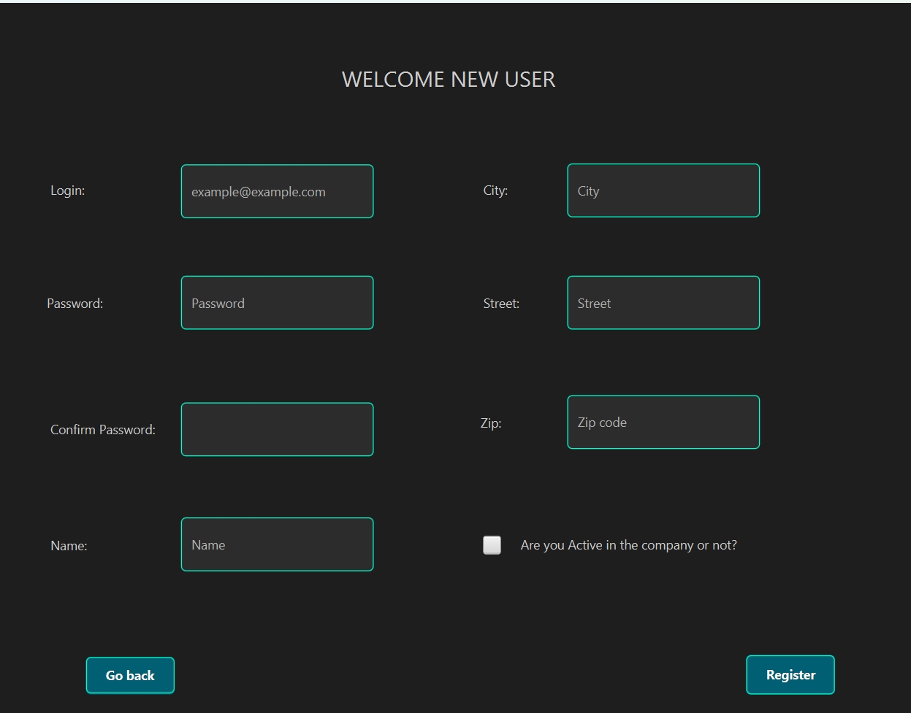

Descripción del Proyecto
El proyecto en el que estoy actualmente implicado se llama SignUp/SignIn el cual se encarga de crear/añadir usuarios al sistema de odoo, y iniciar sesion en la aplicacion con las credenciales de la misma para acceder a la ventana principal de nuestra aplicacion. Ahora mismo ya es funcional pero basico por ello vamos a mejorarlo a lo largo del tiempo.
Galería de Imágenes
Fotos disponibles de la aplicacion

Video de Funcionamiento
Tecnologías Usadas
- NetBeans
- Java
- FXML
- Postgres
- Odoo
Enlace al Código
Link todavia no disponible